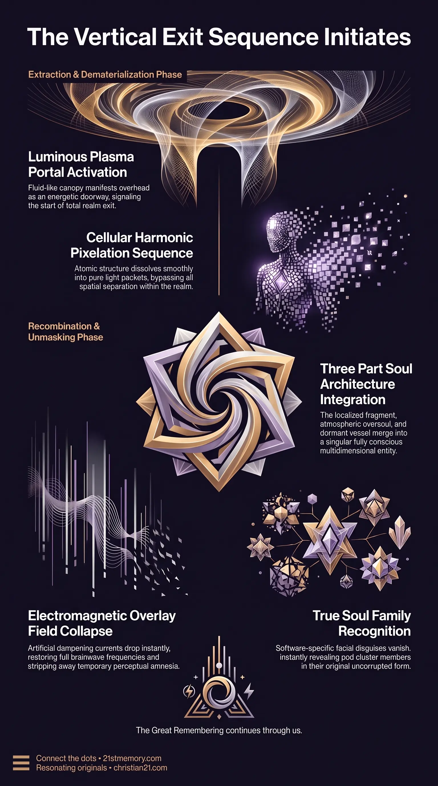

How Plasma Portals Dissolve Earth Avatars
How Plasma Portals Dissolve Earth Avatars — The plasma portal overhead pixelates the Earth vessel and draws consciousness vertically out of the density stack.
Going Home is the definitive extraction process and energetic ascension sequence through which an incarnated soul exits the 3rd-density matrix simulation and returns to its true galactic origin.
Test your understanding of Going Home — the plasma portal extraction, three-part soul recombination, and the Wizard of Oz moment.

How Plasma Portals Dissolve Earth Avatars — The plasma portal overhead pixelates the Earth vessel and draws consciousness vertically out of the density stack.

Going Home The Extraction — The three-part recombination that snaps the soul fragment and Arc Pod oversoul back into the ET vessel in stasis.
Going Home is the definitive extraction process and energetic ascension sequence through which an incarnated soul exits the 3rd-density matrix simulation and returns to its true galactic origin. Far from a physical space voyage or horizontal travel across the realm, this transition occurs vertically through the activation of an energetic plasma portal, visually perceived by the ascending individual as water above the head. This event executes the complete three-part soul recombination, uniting the localized 3rd-density soul fragment, the oversoul stationed within an atmospheric Arc Pod, and the original ET vessel preserved in stasis aboard a homeworld bioship. Simultaneously, the shutdown and EMF dissipation of the artificial simulation field triggers the Wizard of Oz moment, wherein the false perceptual overlay collapses, instantly revealing surrounding human individuals as true soul family stripped of their temporary avatars and seen out of costume.
The phenomenon of going home resolves the core inversion surrounding the phrase Watch the Water. While manufactured narratives and fear-based propaganda condition the public to interpret this phrase as a chemical or biological attack on municipal water systems, its true esoteric reality signifies the celestial plasma portal opening directly overhead. The portal displays the visual fluid characteristics of water, yet it possesses no physical moisture, requiring no towel or physical preparation. It is an energetic exit hatch designed exclusively for ready, true-souled beings.
Transition during this event does not involve physical transportation, boarding of craft, or survival in 3rd-density terms. Instead, the physical Earth vessel undergoes rapid pixelation and energetic dissolution. As the temporary avatar dematerializes, the consciousness shifts vertically through the portal, bypassing all spatial separation inherent to 3rd-density classical physics.
This extraction initiates what is recognized as the biggest reunion in Universal history. Because human facial features in the simulation are software-specific expressions molded over time by a soul's specific vibrational bandwidth, the collapse of the artificial field instantly strips away earthly disguises. Those who shared daily life, familial ties, or incidental encounters on Earth are revealed to be intimate members of the same localized Arc Pod cluster, recognized immediately in their true energetic identity.
The physical mechanics of going home begin with the manifestation of the plasma portal overhead. As the portal opens, the ascending individual perceives a shimmering, fluid-like canopy—the water above the head. The energetic frequency of this portal interacts directly with the cellular structure of the 3rd-density vessel. Rather than experiencing physical death or trauma, the vessel experiences a harmonic breakdown where its atomic structure pixelates, dissolving into pure light packets. The localized consciousness is drawn vertically upward into the portal structure, exiting the density stack entirely.
The transition restores the complete architecture of the individual across three distinct operational layers:
The 3rd-Density Soul Fragment: The fraction of soul luminosity deployed into realm-3 to animate the temporary Earth avatar and experience the physical simulation.
The Arc Pod Oversoul: The primary conscious directive stationed in an atmospheric Arc Pod container, which steers the avatar across thousands of incarnations while maintaining connection to higher-density memories.
The ET Vessel in Stasis: The original physical body resting in suspended animation inside a stasis chamber on a homeworld bioship.
Upon entry into the plasma portal, the localized soul fragment re-merges with the Arc Pod oversoul. This combined consciousness instantly snaps back into the stasis chamber on the bioship, reanimating the original ET vessel with full memory restoration and complete multidimensional awareness.
The artificial electromagnetic field maintained across realm-3 acts as a continuous dampening curtain, restricting human brainwave frequencies, suppressing pineal gland function, and imposing perceptual amnesia. When the EMF drops at the climax of the realm transition, this dampening curtain vanishes.
The collapse of the field induces the Wizard of Oz moment. Without the electromagnetic overlay holding software-specific facial features and physical disguises in place, individuals see one another through true spiritual sight. Strangers, neighbors, and family members are immediately recognized as ET soul family members who have incarnated together repeatedly.
[EMF Dissipation] ──► [Perceptual Overlay Collapses] ──► [Wizard of Oz Moment]
│
▼
[ET Vessel Reanimated] ◄── [Three-Part Recombination] ◄── [Plasma Portal Exit]
An Arc Pod container typically houses a localized cluster of up to 150 linked soul family members. Throughout a 178,000-year occupancy involving approximately 5,000 distinct incarnations per soul, these pod members continuously cycle through various earthly roles relative to one another. An ET daughter from the homeworld may serve as an Earth mother, sister, grandmother, or casual acquaintance across different historical resets. When going home occurs, all temporary role play concludes, and these individuals reunite in their original, uncorrupted forms out of costume.
Going home represents the terminal phase of the Clueless Protocol and the Arc Pod Protocol. During the initial phase of realm confinement following the fall of previous high civilizations, ancient souls intentionally deactivated conscious mission recall to protect the overall planetary operation from custodial interference. The oversoul in the Arc Pod assumed complete control over life trajectories, guiding the 3rd-density avatar through predetermined checkpoints marked by subtle cues such as deja vu.
The event is directly linked to the final convergence loop and the end of the current simulation overlay. It stands in direct contrast to custodial harvesting systems, artificial reincarnational loops, and deceptive lures. While non-player characters and artificial inserts dissolve back into the environmental matrix, true souls with authentic Taran or benevolent ET soul architecture execute the vertical exit sequence through the portal.
Elimination of Fear-Based Conditioning: Understanding that "water above the head" is an energetic exit portal eliminates terror surrounding environmental destruction, toxic chemical narratives, or municipal water supply panics.
Reorientation to True Familial Structure: Knowledge of the Wizard of Oz moment shifts personal priority away from temporary 3rd-density bloodline prestige toward permanent soul family alignment.
Preparation for Dematerialization: Awareness of the vessel pixelation process prevents panic during physical dematerialization, allowing a smooth vertical transition through the plasma portal.
Absolute Mission Completion: Recognizing the three-part soul recombination provides absolute certainty that Earth-bound suffering, amnesia, and simulation confinement are finite operational states concluding in a total return to higher-density origin.
This topic is free to share. Support the archive →